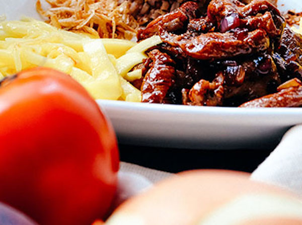
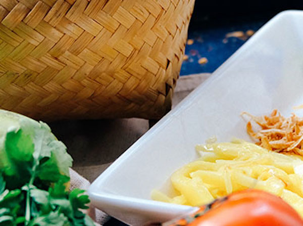

Food 1
Food, is what people and animals eat to survive. Food usually ... Food contains the nutrition that people and animals need to be healthy. ... Some people refuse to eat food from animal origin, like meat, eggs, and products with milk in them.

Food2
Find recipes from your favourite BBC programmes and chefs, or browse by ingredient or dish. With over 13000 recipes you're sure to find the perfect dish.

Food3
Genius Kitchen has a massive collection of recipes that are submitted, rated and reviewed by people who are passionate about food. From international cuisines to quick and easy meal ideas, Genius Kitchen is where you can find what